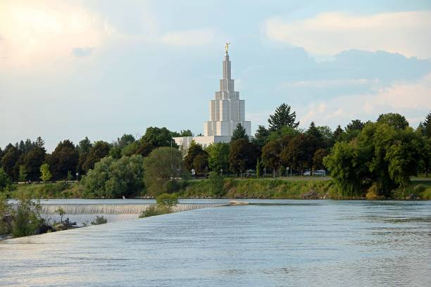
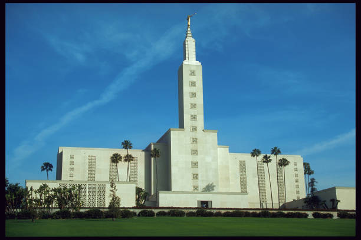
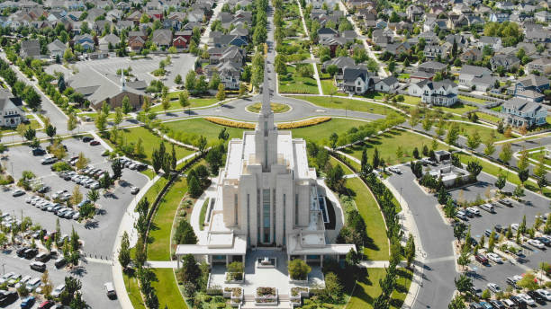

Temple Album
☰
Home
Old
New
Large
Small
Home
Arizona Temple
Cape Town Temple
Ghana Accra Temple
Huston Temple

Idaho Falls Temple

Los Angeles Temple
Nairobi Kenya Temple
San Diego Temple

South Jordan Temple